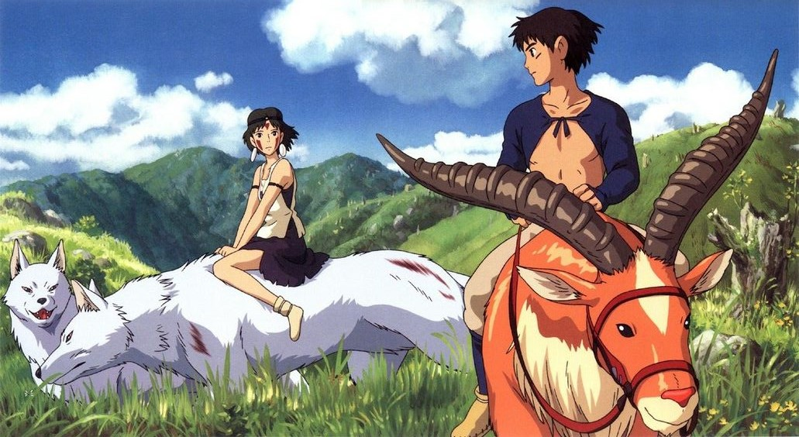
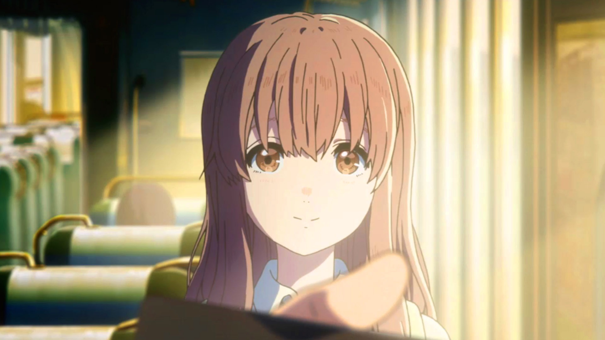
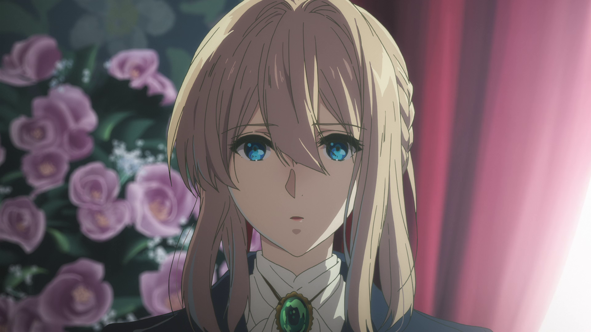

ANIME
アニメ

JUJUTSU KAISEN
呪術廻戦
"Jujutsu Kaisen" was animated by Studio MAPPA. The art captures dynamic action sequences with fluid movements and impactful attacks. This dynamic style enhances the intensity of battles, making them visually engaging and exciting. Characters in "Jujutsu Kaisen" are meticulously designed, each with unique appearances and distinct personalities. From the protagonists to the villains, the characters are visually striking and memorable, adding depth to the story. The manga and anime excel in portraying expressive facial expressions, effectively conveying emotions ranging from intense determination to comedic relief. This enhances the reader's or viewer's connection to the characters and their experiences.
STUDIO GHIBLI
スタジオジブリ
Studio Ghibli's films predominantly feature hand-drawn animation, giving them a timeless and organic quality. This dedication to traditional animation techniques emphasizes the craftsmanship and attention to detail in every frame, which is appreciated by audiences who admire the artistry of animation.
Studio Ghibli's art often showcases a profound appreciation for the beauty of nature. From lush forests to serene landscapes, the studio's films meticulously depict the natural world with intricate detail and vibrant colors. This emphasis on natural settings creates immersive and visually stunning environments that captivate audiences.

Characters in Studio Ghibli films are characterized by their expressive and emotive designs. Whether human or fantastical creatures, each character is crafted with distinct personalities and memorable appearances. Their expressive facial features and body language allow audiences to easily connect with and empathize with the characters' journeys.
Studio Ghibli's art often incorporates elements of fantasy and surrealism, creating enchanting and whimsical worlds. From magical creatures to fantastical landscapes, these elements add a sense of wonder and imagination to the studio's films, appealing to both children and adults alike.
KYOTO ANIMATION
京アニ
Kyoto Animation also known as KyoAni is one of Japan's quintessential animation studios that have captured the hearts of many across the globe. Founded in July 12, 1985, Kyoto Animations have propelled themselves into the anime industry producing famous anime titles such as Clannad, K-On, Liz and the Blue Bird, Violet Evergarden and A Silent Voice. Through their emphasis on the human expression and their ability to communicate the complex, Kyoto Animation builds worlds and characters that connect to you as a human being.
One of their most famous works, A Silent Voice (2017) took the world by storm as an emotional rollercoaster feautring a captivating story of redemption and friendship. Through KyoAni's animation culture, A Silent Voice is able to communicate the and present the feelings and words of a deaf girl, words and feelings that have captured the hearts across the world.
Naoko Yamada, the director of the film, places heavy attention to the character’s body language to depict the contrast between the character’s feelings and their inability to communicate them. This brilliant way of nonverbal storytelling is evidence of Naoko Yamada’s talent for character building and wordless drama through cinematic means.
Another famous work of Kyoto Animation is Violet Evergarden. The concept of personhood is a complex topic to approach, especially if its being communicated through a medium such as animation. Kyoto Animation takes this challenge and through Violet Evergarden, executes the combination in such an elegant and fantastical way. Violet Evergarden has become one of the most impressive TV anime productions of all time through Akiko Takase’s incredibly detailed illustrations that absorbs its audiences into the Victorian opulence of the setting. Through it's breathtaking visuals accompanied by heart-wrenching and moving plot, Violet Evergarden will always remain to be a must watch for both anime and non-anime enthusiasts.
